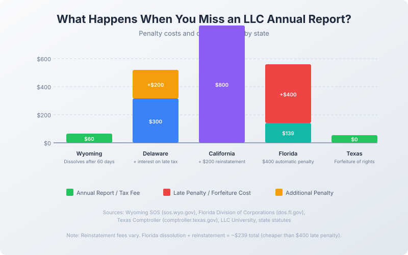

Missed Your LLC Annual Report? Here's How to Fix It (State-by-State Guide)
Last updated: 2026-08-18
The short version
TL;DR: If you missed your LLC annual report, file it today. Most states give you a grace window, but Florida hits you with a $400 late fee immediately and Wyoming can dissolve your LLC after 60 days. Set three calendar reminders (60, 30, and 7 days before deadline) so this never happens again. For ongoing compliance tracking, doola handles annual report deadlines across all 50 states.You got the notice. Your LLC annual report is overdue, and now you're scrambling to figure out what it costs to fix. The answer depends entirely on your state, and the range is dramatic: from free reinstatement in Wyoming to $538.75 in Florida.
Missing an LLC annual report is one of the most common mistakes new business owners make. States follow a predictable escalation: late fee, loss of good standing, and eventually administrative dissolution. The good news is that almost every state lets you reinstate, but the longer you wait, the more it costs.
What happens if you miss your LLC annual report?
When you miss the deadline, states impose a late fee (if applicable), then revoke your "good standing." Without good standing, you can't sue, get a business loan, or sometimes open a bank account. Eventually, the state dissolves your LLC entirely.
The timeline varies. Florida gives you about four months before dissolution. Wyoming draws the line at 60 days. Texas takes a slower, multi-step approach. In every case, reinstatement is possible, but acting fast saves money.
State-by-state penalties for missed LLC annual reports
Wyoming: $60 annual report, dissolution after 60 days
Wyoming LLCs pay a $60 annual report fee (called a "License Tax"), due before the first day of your formation month. There is no separate late fee, but if you don't file within 60 days of the deadline, the Secretary of State may administratively dissolve your LLC. Wyoming is the most aggressive state in this regard: failure to file the annual report is the number one reason LLCs get shut down there.
Reinstatement: File within two years of dissolution through the Wyoming SOS. No separate reinstatement fee, but you must file the overdue report(s).
Delaware: $300 annual franchise tax, $200 late penalty
Delaware LLCs pay a $300 annual franchise tax due June 1st. Late payments incur a $200 penalty plus interest. Continued non-payment results in your LLC being listed as void or forfeited.
Reinstatement: Pay all outstanding taxes, penalties, and interest through the Delaware Division of Corporations. No separate reinstatement fee, but accumulated costs add up.
California: $800 annual franchise tax, harsh reinstatement penalties
California requires an $800 annual franchise tax (due on the 15th day of the 4th month after formation) plus a $20 biennial Statement of Information. Late payments can incur penalties of up to 25% of unpaid tax plus interest. If the Franchise Tax Board suspends your LLC, you cannot legally operate in California.
Reinstatement: Pay all past-due taxes and penalties, then file a Certificate of Revivor. The reinstatement fee is $200 through the California SOS. California's $800 tax applies even if your LLC had zero revenue.
Florida: $138.75 annual report, $400 automatic late penalty
Florida LLCs pay $138.75 for an annual report due between January 1 and May 1. File after May 1st and you get an automatic $400 penalty, bringing your total to $538.75. This penalty is non-negotiable.
If you still don't file, Florida dissolves your LLC by the 4th Friday in September. Here's the twist: reinstatement after dissolution costs only $100 (reinstatement) + $138.75 (annual report) = $238.75. That's $300 less than the late penalty. So if you've missed the deadline by a lot, waiting for dissolution and reinstating can actually save you money.
Reinstatement: File through Sunbiz for $100 plus the annual report fee.
Texas: Free public information report, forfeiture of rights
Texas is the outlier. Instead of an annual report, you file a Public Information Report (PIR) with the Texas Comptroller. The PIR is free. It's due by May 15th each year.
Texas uses a three-step escalation: (1) a "Notice of Intent to Forfeit" after 60 days past the deadline, (2) a "Notice of Forfeiture" about 60 days later shutting down your LLC, and (3) a "Forfeiture of Registration" from the Secretary of State about 180 days after that. LLC members and managers may become personally liable for taxes during this process.
Reinstatement: File the overdue PIR, pay outstanding taxes, submit a Tax Clearance Letter Request (Form 05-391), then file an LLC Reinstatement (Form 801) with the Texas SOS.
Penalty comparison at a glance
| State | Annual Fee | Late Penalty | Dissolution Window | Reinstatement Cost |
|---|---|---|---|---|
| Wyoming | $60 | None (direct dissolution) | 60 days | Free (file overdue reports) |
| Delaware | $300 | $200 + interest | Varies | Pay all outstanding |
| California | $800 | Up to 25% of tax | FTB suspension | $200 + past taxes |
| Florida | $138.75 | $400 automatic | ~4 months | $238.75 |
| Texas | $0 | Forfeiture of rights | ~8 months | File PIR + reinstatement |

How do I fix a missed LLC annual report?
The fix is straightforward regardless of state:
- File the overdue report now. Go to your state's SOS website, look up your LLC, and file online.
- Pay the penalty. It calculates automatically at checkout.
- Confirm good standing. Search your LLC on the state website after filing.
- If dissolved, file for reinstatement. This is a separate step from the annual report.
- Update your contact info so you receive future reminders.
For businesses in multiple states, services like doola track deadlines and handle filings across all 50 states. If you need enterprise-level compliance tracking across many entities, Harbor Compliance offers software and services for managing annual reports, licenses, and registered agents at scale.
How can I prevent missing my annual report?
- Set three calendar reminders: 60 days, 30 days, and 1 week before deadline.
- Verify your email on file with the state so you receive their courtesy reminders.
- File early. Most states let you file up to a year ahead.
- Use a compliance service like doola for automated deadline tracking.
- Keep your registered agent current. States send notices to your agent's address.
Recap checklist
- Identify your state's deadline on the Secretary of State website.
- File the overdue report today to stop penalties from growing.
- Pay the late penalty (calculated automatically at checkout).
- Check your good standing after filing by searching your LLC on the state website.
- If dissolved, file for reinstatement (a separate step).
- Set three reminders for next year: 60, 30, and 1 week before deadline.
- Update your contact info on the state's website.
- Consider a compliance service like doola if you want automated tracking.
FAQ
How much is the penalty for a late LLC annual report?
It depends on the state. Florida charges $400. Delaware charges $200 plus interest. California can charge up to 25% of unpaid taxes. Wyoming has no monetary penalty but dissolves your LLC after 60 days.
Can I reinstate my LLC after dissolution?
Yes, most states allow reinstatement within a set period. Wyoming gives you two years. Florida allows reinstatement through Sunbiz for $100. Delaware requires payment of all outstanding taxes and penalties. The process and cost vary by state.
Does missing an annual report affect my EIN?
No. Your EIN is issued by the IRS and is not affected by state filings. However, if your LLC is dissolved, you may need to update your EIN with the IRS after reinstatement.
How do I know when my LLC annual report is due?
Check your state's Secretary of State website. Florida LLCs are due May 1st. Wyoming LLCs are due before their formation month. Delaware franchise taxes are due June 1st. California's franchise tax is due on the 15th day of the 4th month after formation.
Should I hire a service to handle my annual reports?
For a single LLC in one state, setting calendar reminders and filing yourself costs nothing beyond the state fee. If you have multiple LLCs or operate in several states, doola or Harbor Compliance can save you from costly missed deadlines.
Get our free LLC Formation Checklist
Step-by-step guide: state fees, timelines, EIN process, and the exact paperwork checklist. Used by 200+ founders.
Download Free Checklist